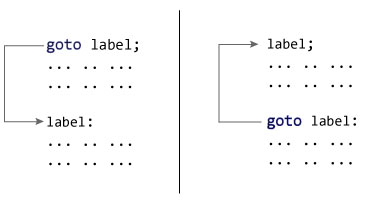
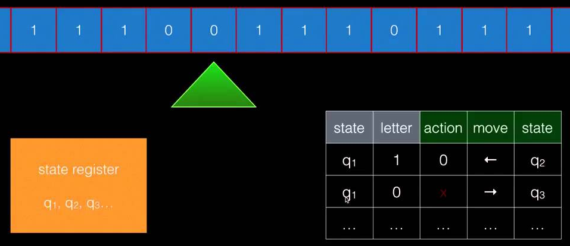

class: center, middle # Control-flow as Meta Calculation --- # Хороший код - тестируется - переиспользуется - предсказуем и безопасен - легко поддается рефакторингу и анализу - легко типизируется И самое главное - **он несуществует** (картинка с единорогом) --- # Главная проблема программирования в 21 веке Сайд-эффекты в твоем коде тут много статей об этом --- # Все неявное станет явным .left-column-50[ Неявное исполнение: ```javascript > var user = requestUser(); { fio: "Ivan Ivanov", age: 19 } > var res = writeToFile(user.fio); { success: true } ``` ] .right-column-50[ Явное исполнение: ```javascript > var req = requestUser(); { type: "http", url: "/user", payload: {id: 2} } > var user = runEffect(req); {fio: "Ivan Ivanov", age: 19 } > var writing = writeToFile(user.fio); { type: "file", name: "./sys.log", data: "Ivan Ivanov" } > var res = runEffect(writing) { success: true } ``` ] --- # Pure vs Effectful .left-column-50[ Pure: ```javascript var res1 = doSmth1(start); var res2 = doSmth2(res1); var res3 = doSmth3(res2); ``` ] .right-column-50[ With effects: ```javascript var eff1 = doSmth1(start); var res1 = runEffect(eff1); var eff2 = doSmth2(res1); var res2 = runEffect(eff2); var eff3 = doSmth3(res2); var res3 = runEffect(eff3); ``` ] --- # Sync vs Async .left-column-50[ Sync: ```javascript var res1 = doSmth1(start); var res2 = doSmth2(res1); var res3 = doSmth3(res2); ``` ] .right-column-50[ Async: ```javascript doSmth1(res1 => { doSmth2(res1, res2 => { doSmth3(res2); }); }); ``` ] --- # Safe vs Error handling .left-column-50[ Without error: ```javascript var res1 = doSmth1(start); var res2 = doSmth2(res1); var res3 = doSmth3(res2); ``` ] .right-column-50[ With error handling: ```javascript var res1 = doSmth1(start); if (isError(res1)) { var res2 = doSmth2(res1); if (isError(res2)) { var res3 = doSmth2(res2); } else { handle(res2) } } else { handle(res3) } ``` ] --- # Not nullable vs nullable .left-column-50[ Not nullable: ```javascript var res1 = doSmth1(start); var res2 = doSmth2(res1); var res3 = doSmth3(res2); ``` ] .right-column-50[ With null-check: ```javascript var res1 = doSmth1(start); if (!isNull(res1)) { var res2 = doSmth2(res1); if (!isNull(res2)) { var res3 = doSmth2(res2); } } ``` ] --- # Control-flow > In computer science, control flow (or flow of control) is the order in which individual statements, instructions or function calls of an imperative program are executed or evaluated. > > -- <cite>Wiki</cite> Example control-flow primitive: - `if` - `switch ... case` - `while`, `for` - `{ some code }` - `break`, `continue` - `throw new Error` - `return res`, `yield res` --- # GOTO .center-text[  <img src="./img/goto_example.gif"/> ] --- # Example: error handling .left-column-50[ Today: ```javascript var res1 = doSmth1(start); if (!isError(res1)) { var res2 = doSmth2(res1); if (!isError(res2)) { var res3 = doSmth2(res2); } else { handle(res2) } } else { handle(res3) } ``` ] .right-column-50[ With GOTO: ```javascript error: handle(errorMsg) global errorMsg; function exitIfErr(res) { if (isError(res) { errorMsg = res; goto error; } else { return res; } } // calculation var res1 = exitIfErr(doSmth1(start)); var res2 = exitIfErr(doSmth2(res1)); var res3 = exitIfErr(doSmth3(res1)); ``` ] --- # Don't forget where you came from Mother of all statement: .center-text[ `if value then goto label` ] .left-column-50[ ```c i = 1; while(i < 4) { print(i); i = i + 1; } ``` ] .right-column-50[ ```c i = 1 START: if i = 4 then goto END print(i) i = i + 1 goto START ``` ] .center-text[  ] --- # All you need is... .left-column-50[ Calculation: `c = add(inc(a), dec(b))` Order execution: 1) `inc(a)`, `dec(b)` 2) `add(inc(a), dec(b))` ] .right-column-50[ Conditional jump: `if add(a, b) then goto LABEL` Order execution: 1) `add(a, b)` 2) `if (add(a, b))` 3) `goto label` ] --- # New World Order Imagine some calculation with reverse order calculation .center-text[ `c = add(inc(a), dec(b))` ] 1) `add(placeholder1, placeholder2)` 2) `inc(a)` 3) `dec(b)` .center-text[ <img src="./img/lazy.svg" /> `if(a, goto label)` ] 1) `if(placeholder1, placeholder2)` 2) `a` 3) maybe `goto label` --- # In your code .left-column-50[ ```javascript var x = {} x && x.obj && x.obj.prop ``` ] .right-column-50[ ```javascript var x = {} and(and(x, x.obj), x.obj.prop) ``` ] --- # This is the norm Normal order a.k.a call-by-name(call-by-need) a.k.a lazy evaluation Without it all our languages is not turing-complete Theorem: all calculations can be calculated with normal order First "programming language": - 1936 Alonzo Church - Lambda calculus - normal order - 1936 Alan Turing - Turing machine - applicative order First computer: - 1944 - Von Neumann architecture(inspired Turing machine) .right-column-50[ With normal order: **all is calculation** ] .left-column-50[ With applicative order: **all is calculation+control-flow** ] --- # Control-flow as contituation Continuation-passing style: Async: ```javascript requestUser(user => { writeToFile(user.fio, res => { ... } ) }) ``` Errors: ```javascript doWithErrors(res => { doWithErrors2( res, res2 => { ... }, handleErr ) },handleErr) ``` --- # Introduce call/cc .left-column-50[ ```javascript var a = 1 + 2; var b = a + 4 // 7 ``` ```javascript var firstCalc = cont => cont(1 + 2) var b = firstCalc(a => a + 4) // 7 cont === a => a + 4 ``` ] .right-column-50[ ```javascript var r var a = callcc(cont => { r = cont; cont(1 + 2) // 7 return 1 + 2 }); var b = a + 4 // 7 r(1 + 2) // 7 ``` ] --- # Exceptions ```javascript var cont; function throw (err) { cont(err); } function try(program, handleErr) { var res = callcc(c => { cont = c; program() }) if (isError(res)) { handleErr(res) } } try( () => { var a = doWithErrors() // throw new Error() ... }, err => { ... } ) ``` [Writing exceptions by contituations](http://courses.cs.washington.edu/courses/cse341/04wi/lectures/15-scheme-continuations.html) --- # Continuation as precursor - exceptions - algebraic effects with handlers - generators, async/await - fibers, coroutines --- # Control-flow as High Order Calculation ```javascript writeToFile(requestUser().fio) VS pipe(() => requestUser(), x => x.fio, fio => writeToFile(fio)) ``` From execution to calculation a.k.a thunk: `requestUser() -> () => requestUser()` Thunk is lazy! --- # Fix NPE ```javascript var x = {} x && x.obj && x.obj.prop ``` .left-column-50[ ```javascript function pipe(...fns) { return value => { var res = value fns.forEach(currFn => { res = currFn(res) }) return res }; } pipe( x => x.obj, obj => obj.prop )(x) ``` ] .right-column-50[ ```javascript function pipeWithNullable(...fns) { return value => { var res = value; fns.forEach(currFn => { if (!isNil(res)) { res = currFn(res) } }) return res }; } pipeWithNullable( x => x.obj, obj => obj.prop )(x) ``` ] --- # Lets make great interface ```javascript var x = {} x && x.obj && x.obj.prop ``` .left-column-50[ ```javascript function Option(value) { this = value; } Option.prototype.then = fn => { this = isNil(this) ? this : fn(this) } ``` ] .right-column-50[ ```javascript var x = {}; var val = new Option(x) .then(val => val.obj) .then(obj => obj.prop) ``` ] --- # Representing monads - `of`, `pure`, `unit` - constructor. *How wrap value to monad?* - `flatMap`, `bind`, `return` - applyer. *How unwrap value from monad?* Monad laws: - Left identity: `flatMap(f, of(x)) === f(x)` - Right identity: `flatMap(of, x)` - Associativity: `flatMap(g, flatMap(f, x)) === flatMap(x => g(f(x)), x)` [Dont break laws!](https://www.sitepoint.com/how-optional-breaks-the-monad-laws-and-why-it-matters/) **Beware of Haskell Police!** --- # Monads everywhere! - `Promise` a.k.a `Task` a.k.a `Future` - `Optional` a.k.a `Option` a.k.a `Maybe` - `List` - `Either` a.k.a `Try` a.k.a `Error` - `Observable` --- # Two way? Monads and Contituations is isomorphic and equal by power [Representing Monads](http://citeseerx.ist.psu.edu/viewdoc/download?doi=10.1.1.43.8213&rep=rep1&type=pdf) This is just representations of **control-flow** Control-flow is originated by incompleteness strict(applicative) evaluation [Lazy Evaluation and Delimited Control](http://www.osl.iu.edu/publications/prints/2009/garcia09popl-lazy.pdf) --- # A journey of a thousand miles starts with a single step